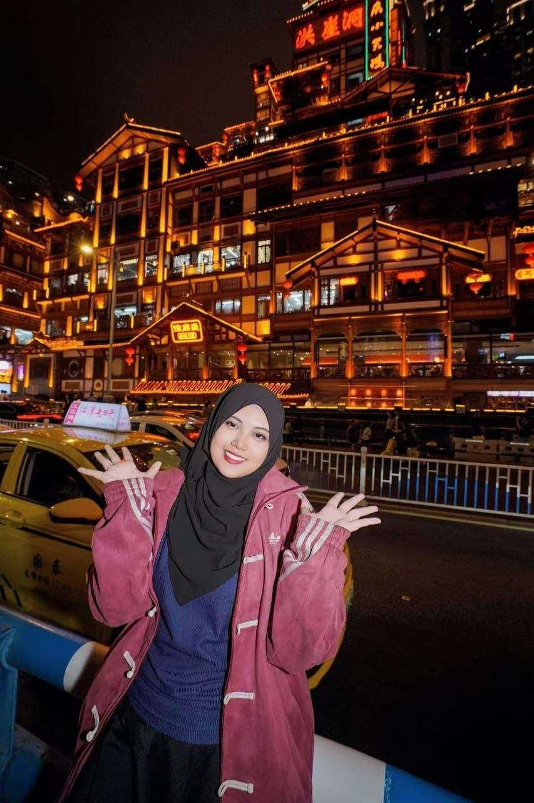

Project Title
Project description goes here.
Click on each star on the constellation to find out about projects that I have done throughout the years.
Project description goes here.
Visual documentation of system architecture and structural components.

Art allows me to express ideas through drawing, design, and creative work. It gives me a different way to explore ideas, experiment with visual concepts, and bring creativity into the way I approach problems.